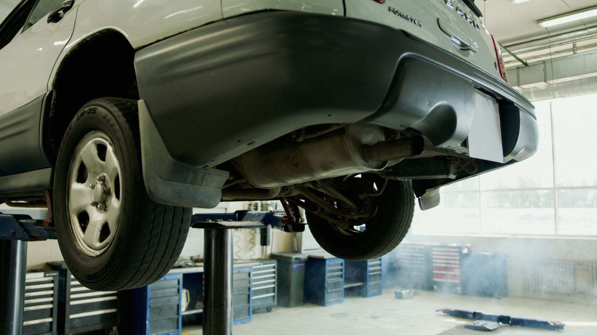
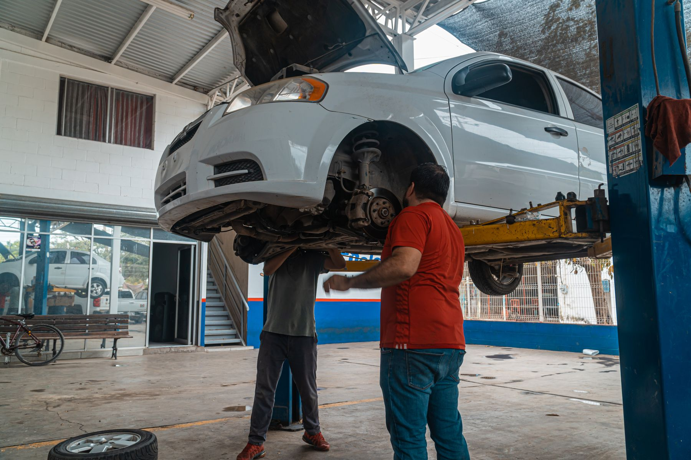
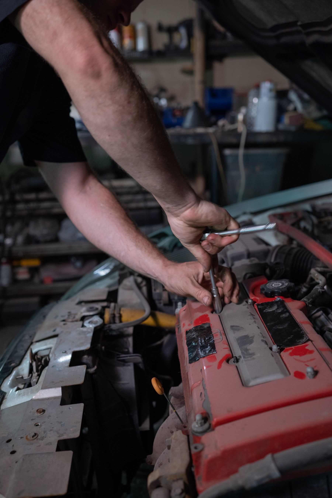
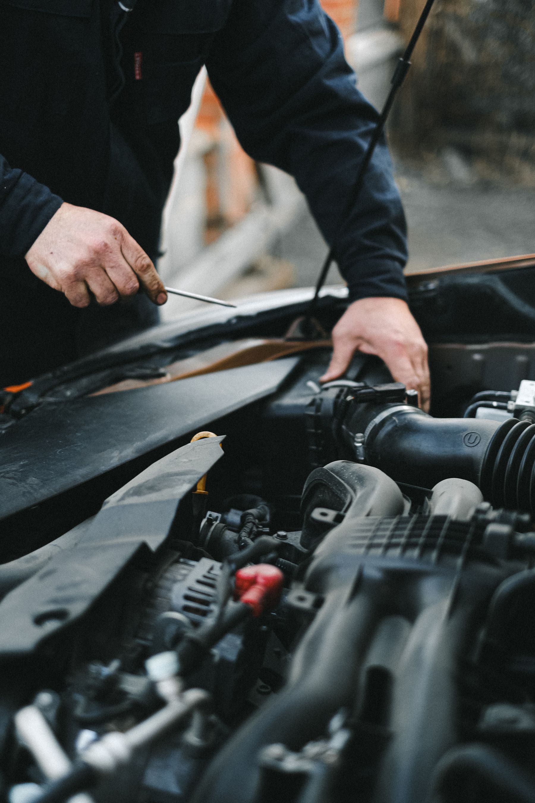
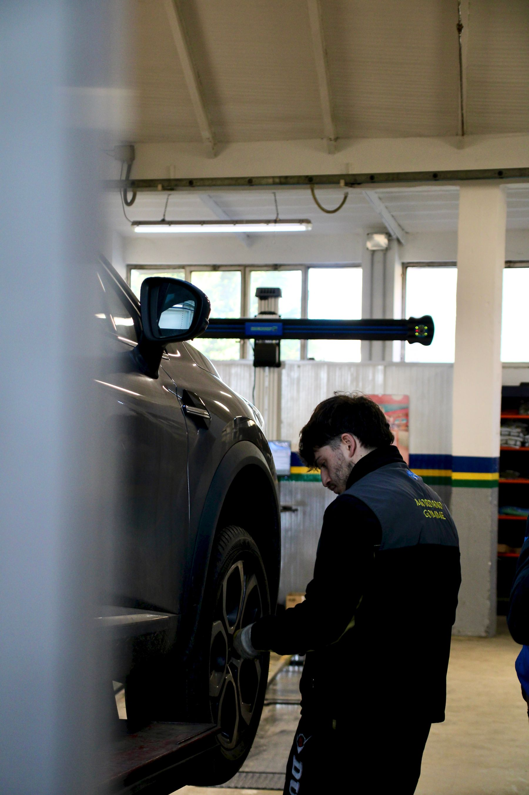
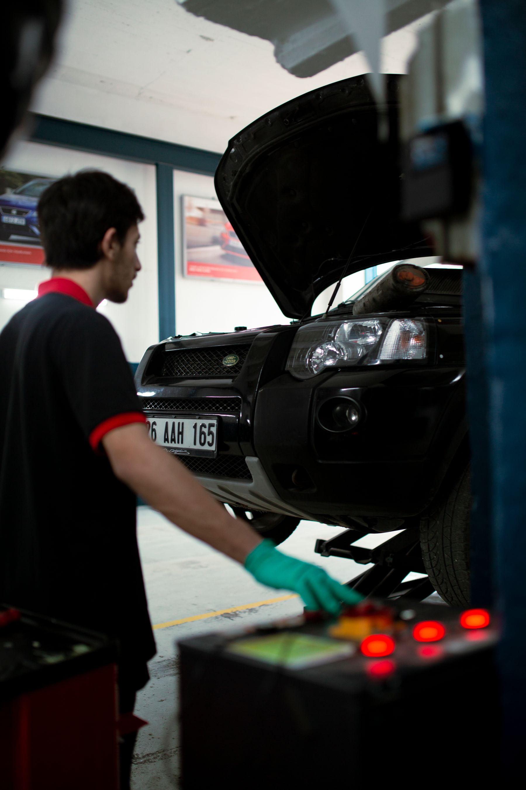

Sample 01 / 車検

車検・点検
Inspection

整備とメンテナンス
Auto maintenance


架空の企業情報を使用したデザインサンプルです。
About us
私たちについて車の気になるを、
次の安心へ。
Inspect today. Drive tomorrow.
いつもと違う音、ハンドルの感触。
毎日使う車だからこそ、
小さな変化を一つずつ。
車検・定期点検から修理まで、
状態と選択肢を伝える整備サービスを
イメージしたデザインです。

Service story
整備のサンプル写真・内容はご提案用のイメージです。実際の整備実績ではありません。
Sample 02 / メンテナンス
違和感の理由を、ていねいに。
Our approach
大切にすること
見て、伝えて、整える。
Care guide
気になる症状の確認から、
整備内容のご案内へ。
- 車の状態をお聞きする
- 点検内容とご希望を確かめる
- 整備・修理の選択肢をご案内
架空サービスの相談フロー例です。
Contact
走る毎日に安心を、
次の一歩へ。
このページから実際の相談・送信はできません。
所在地：サンプル表示（架空）
連絡先：XXX-XXXX-XXXX